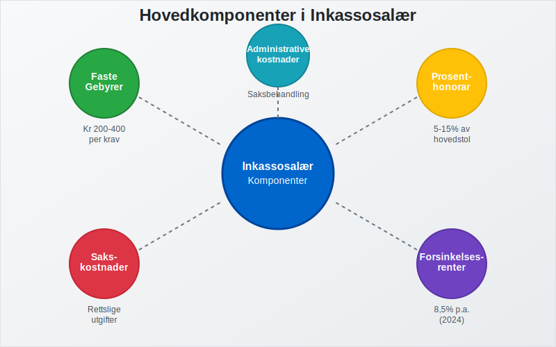
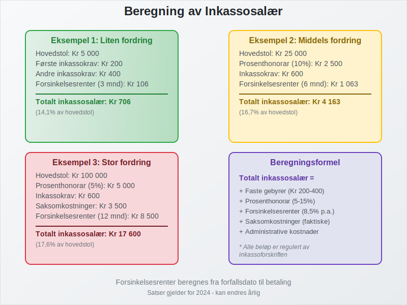
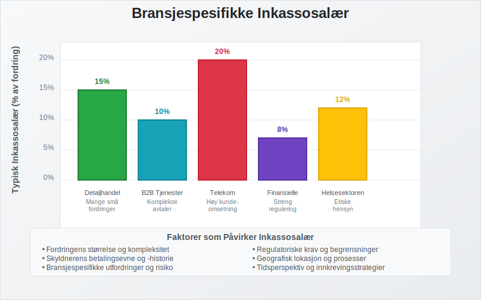
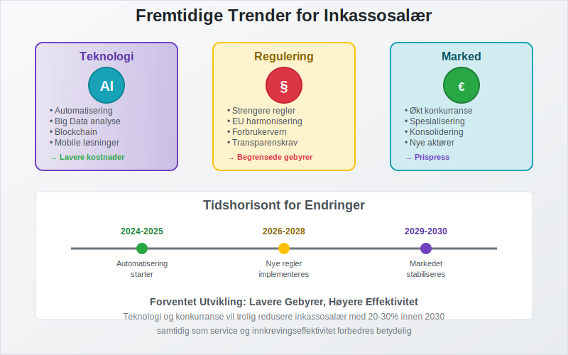

Inkassosalær er den kompensasjonen som inkassoselskaper og advokater mottar for å drive inn forfalte fordringer på vegne av kreditorer. Dette omfatter både faste gebyrer og prosentbaserte honorarer som er regulert av norsk lov. Forståelse av inkassosalær er viktig for både bedrifter som bruker inkassotjenester og skyldnere som mottar inkassokrav.
Seksjon 1: Hva er Inkassosalær?
Inkassosalær er den økonomiske kompensasjonen som inkassoselskaper og advokater mottar for å utføre inkassovirksomhet. Dette inkluderer alle former for honorarer, gebyrer og kostnader som påløper i forbindelse med innkreving av forfalte fordringer.

Hovedkomponenter i Inkassosalær
Inkassosalær består av flere elementer:
- Faste gebyrer: Standardiserte beløp for spesifikke inkassotjenester
- Prosentbaserte honorarer: Andel av den innkrevde summen
- Saksomkostninger: Faktiske utgifter til rettslige prosesser
- Forsinkelsesrenter: Renter på forfalte beløp
- Administrative kostnader: Kostnader for saksbehandling og oppfølging
Lovgrunnlag for Inkassosalær
Inkassosalær er regulert av flere lover og forskrifter:
- Inkassoloven: Hovedregulering av inkassovirksomhet
- Inkassoforskriften: Detaljerte regler for gebyrer og prosedyrer
- Domstolloven: Regler for saksomkostninger ved rettslige prosesser
- Forsinkelsesrenteloven: Regulering av forsinkelsesrenter
Seksjon 2: Typer Inkassosalær og Beregning
Inkassosalær varierer avhengig av type sak, beløpsstørrelse og hvilken fase inkassoprosessen befinner seg i. Det skilles mellom utomrettslig inkasso og rettslig inkasso.

Utomrettslig Inkasso Gebyrer
For utomrettslig inkasso gjelder følgende maksimalgebyrer (2024-satser):
| Type Krav | Maksimalt Gebyr | Hjemmel |
|---|---|---|
| Første inkassokrav | Kr 200 | Inkassoforskriften § 4 |
| Andre inkassokrav | Kr 400 | Inkassoforskriften § 4 |
| Betalingsoppfordring | Kr 70 | Inkassoforskriften § 3 |
| Telefonisk purring | Kr 30 per samtale | Inkassoforskriften § 5 |
Prosentbaserte Honorarer
For større fordringer kan inkassoselskaper kreve prosentbaserte honorarer:
- Fordringer under kr 10 000: Maksimalt 15% av hovedstolen
- Fordringer kr 10 000 - 50 000: Maksimalt 10% av hovedstolen
- Fordringer over kr 50 000: Maksimalt 5% av hovedstolen
Rettslig Inkasso Kostnader
Ved rettslige prosesser kommer ytterligere kostnader:
| Type Kostnad | Beløp | Beskrivelse |
|---|---|---|
| Stevningsgebyr | Kr 1 020 - 16 310 | Avhenger av kravets størrelse |
| Advokathonorar | Varierer | Basert på medgått tid og kompleksitet |
| Vitnegebyr | Faktiske kostnader | Reise og tapt arbeidsfortjeneste |
| Sakkyndiggebyr | Faktiske kostnader | Ved behov for ekspertuttalelser |
Seksjon 3: Regulering og Kontroll av Inkassosalær
Inkassosalær er strengt regulert for å beskytte skyldnere mot urimelige kostnader. Finanstilsynet fører tilsyn med inkassoselskaper og deres gebyrpraksis.
Krav til Inkassoselskaper
Inkassoselskaper må:
- Være registrert hos Finanstilsynet
- Følge gebyrregulativet nøye
- Dokumentere alle kostnader og honorarer
- Informere skyldnere om gebyrgrunnlag
- Opptre profesjonelt og etisk
Skyldneres Rettigheter
Skyldnere har rett til:
- Innsyn i gebyrberegninger og kostnadsgrunnlag
- Klage på urimelige eller ulovlige gebyrer
- Betalingsordninger ved betalingsproblemer
- Juridisk bistand ved tvister om inkassosalær
Seksjon 4: Inkassosalær for Ulike Bransjer
Inkassosalær kan variere mellom bransjer avhengig av kompleksitet og risiko. Noen bransjer har spesielle utfordringer som påvirker inkassokostnadene.

Bransjeoversikt
| Bransje | Typisk Inkassosalær | Særlige Utfordringer |
|---|---|---|
| Detaljhandel | 10-15% av fordring | Mange små fordringer |
| B2B Tjenester | 5-10% av fordring | Komplekse avtaler |
| Telekom | 15-20% av fordring | Høy kundeomsetning |
| Finansielle tjenester | 5-8% av fordring | Streng regulering |
| Helsesektoren | 8-12% av fordring | Etiske hensyn |
Faktorer som Påvirker Inkassosalær
Flere faktorer påvirker størrelsen på inkassosalær:
- Fordringens størrelse: Større fordringer gir lavere prosentsats
- Skyldnerens betalingsevne: Påvirker innkrevingsstrategien
- Sakens kompleksitet: Juridiske utfordringer øker kostnadene
- Geografisk lokasjon: Kan påvirke prosess- og reisekostnader
- Tidsperspektiv: Eldre fordringer er vanskeligere å kreve inn
Seksjon 5: Regnskapsføring av Inkassosalær
For bedrifter som bruker inkassotjenester er korrekt regnskapsføring av inkassosalær viktig for å opprettholde oversikt over kostnader og driftskostnader.
Kontering av Inkassokostnader
For Kreditor (Oppdragsgiver)
Når bedriften engasjerer inkassoselskap:
- Debet: Inkassokostnader (driftskostnad)
- Kredit: Leverandørgjeld (skyld til inkassoselskap)
Når Inkasso Lykkes
Ved vellykket innkreving:
- Debet: Bank (innbetalt beløp minus inkassosalær)
- Debet: Inkassokostnader (hvis ikke tidligere ført)
- Kredit: Kundefordringer (opprinnelig fordring)
Skattemessige Aspekter
Inkassosalær har flere skattemessige implikasjoner:
- Fradragsrett: Inkassokostnader er fradragsberettigede driftskostnader
- Merverdiavgift: Inkassotjenester er MVA-pliktige
- Dokumentasjon: Krav til dokumentasjon av kostnader
Seksjon 6: Alternativer til Tradisjonell Inkasso
Moderne teknologi og endrede forretningsmodeller har skapt alternativer til tradisjonell inkasso som kan påvirke inkassosalær-strukturen.
Digitale Inkassoløsninger
Nye teknologier endrer inkassobransjen:
- Automatiserte systemer: Reduserer manuelle kostnader
- AI-basert risikovurdering: Forbedrer innkrevingsstrategier
- Digitale betalingsløsninger: Forenkler betalingsprosessen
- Chatbots og selvbetjening: Reduserer kundeservicekostnader
Alternative Finansieringsmodeller
- Factoring: Salg av fordringer til finansieringsselskaper
- Inkassoforsikring: Forsikring mot tap på fordringer
- Betalingsgarantier: Tredjepartsgarantier for betalinger
Seksjon 7: Fremtidige Trender for Inkassosalær
Inkassobransjen er i endring, og dette påvirker hvordan inkassosalær struktureres og beregnes.

Teknologiske Endringer
- Automatisering: Reduserer manuelle kostnader og kan føre til lavere gebyrer
- Big Data: Forbedrer risikovurdering og innkrevingsstrategier
- Blockchain: Kan forbedre transparens i gebyrberegninger
- Mobile løsninger: Forenkler betalingsprosesser
Regulatoriske Endringer
- Strengere regulering: Kan begrense gebyrøkninger
- Europeisk harmonisering: Påvirker norske regler
- Forbrukerbeskyttelse: Økt fokus på skyldneres rettigheter
Markedstrender
- Økt konkurranse: Kan presse gebyrene nedover
- Spesialisering: Nisjeselskaper med spesialiserte tjenester
- Konsolidering: Færre, men større aktører i markedet
Konklusjon
Inkassosalær er en kompleks del av det norske inkassosystemet som balanserer behovet for effektiv innkreving med beskyttelse av skyldneres rettigheter. For bedrifter er det viktig å forstå kostnadsstrukturen ved egeninkasso versus profesjonell inkasso.
Viktige Punkter å Huske
- Inkassosalær er regulert av norsk lov og kan ikke overstige maksimalgrenser
- Transparens er påkrevet - alle gebyrer må være dokumenterte og rimelige
- Skyldnere har rettigheter til innsyn og klageadgang
- Teknologiske endringer påvirker fremtidens gebyrstrukturer
- Korrekt regnskapsføring av inkassokostnader er viktig for bedrifter
Ved valg av inkassopartner bør bedrifter vurdere både kostnadsnivå, service og etisk praksis for å sikre en balansert tilnærming til fordringshåndtering.